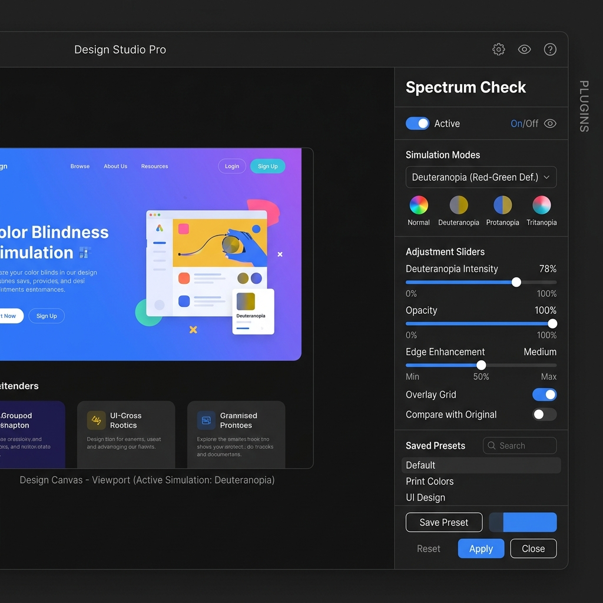

Figma & Sketch
Design with empathy, natively.
The VisionX Plugin integrates directly into your design workflow, letting you test interfaces for visual impairments without ever leaving your canvas.
Real-time simulation on selected artboards WCAG 2.1 contrast checker across all layers Layer-based automated scanning for issues Accessible color palette replacement suggestions
Installation Steps
- Click Download Plugin below to get the .zip archive.
- Open Figma or Sketch Desktop App.
- Navigate to Plugins → Manage Plugins → Add new plugin.
- Select the unzipped VisionX plugin directory.
